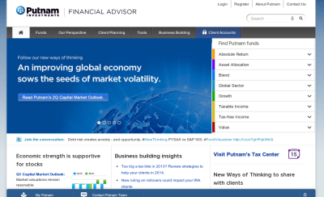
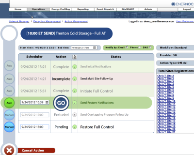
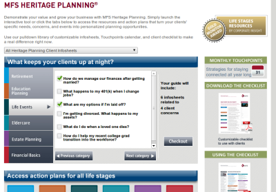

Portfolio
I've worked with major brands like MFS, EnerNOC, Forge Worldwide and Axceler developing websites and mobile applications that are strong enough for the big boys.
Putnam Investments
Responsive Redesign
Helped Putnam convert their corporate public website to a mobile first responsive design. Removed previous JQuery-UI dependencies and rewrote markup to use new bootstrap framework. Moved JQuery to the latest version and coded solutions for older deprecated methods. Integrated new bootstrap calendar with existing highcharts JS code. https://www.putnam.com/advisor/EnerNOC
Modular HTML5 Web Console
Worked with UX architect to develop a new interface for the Action Workflow console. The service is at the heart of EnerNOC's DemandSMART system. The Action Management panel was redesigned to allow for faster access to information. The UI needed to provide an interface that is clean, simple and actionable 'at a glance.' Used JQuery and KnockoutJS to create a dynamic and cross platform single page app that got the job done. Intranet access only.MFS Investments
Flash to Web App
Worked closely with marketing team to code interactive Heritage Planning tool using advanced client side scripting. The tool was previously done in Adobe Flash. The new web app has an intuitive UI, is cross browser compatible and iPad friendly. Additionally worked with designers to develop numerous micro-sites for marketing campaigns. Heritage Planning Tool